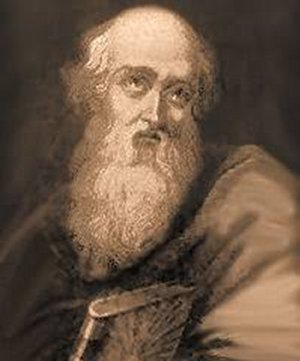

PRELÚDIO

São Policarpo de Esmirna, ocupa um lugar de realce na história do Cristianismo Primitivo. Ele trabalhou muito e viveu o suficiente para ensinar, catequizar, administrar e organizar a Igreja Cristã, deixando-a com grande destaque e efetivamente consolidada em toda aquela região da Ásia.
É certo que enfrentou muitas oposições, nascidas de mentes mal formadas e de heresiarcas conscientes, pessoas que distorciam os conceitos religiosos, que afirmavam inverdades e que não acolhiam a realidade cristã.
Para combater as heresias, ensinar e educar o povo para DEUS, ele escreveu muitas cartas, para diversas regiões, objetivando ensinar, motivar e exercitar a fé do povo e dos religiosos, nas palavras e doutrina verdadeira, se empenhando ao máximo para que a Vontade Divina fosse vigorosamente exercitada.
De toda a sua Obra, representada por vasta correspondência direcionada as Igrejas, também para os seus amigos religiosos e companheiros de luta, assim como as cartas de orientação espiritual para consolidar a fé do povo na doutrina Divina, só salvou uma escrita no ano 110 d.C. “Epístola aos Filipenses”, quando era Bispo de Esmirna.
Um dos grandes méritos de Policarpo, foi a graça especial que teve de conhecer diversos Apóstolos de JESUS, de ter convivido com alguns deles e ter ouvido muitos ensinamentos e orientações para o trabalho evangelizador, que NOSSO SENHOR tinha ensinado aos seus Apóstolos, ensinamentos que lhes foram transmitidos diretamente por eles, pelos Discípulos do SENHOR. Então, era como se ele, Policarpo, estive recebendo ensinamentos diretamente do REDENTOR. Eram preciosos recursos para a catequese, assim como para o viver cotidiano das pessoas.
E sua felicidade ainda foi maior, porque se tornou desde cedo Discípulo de João Evangelista, que era aquele Apóstolo querido de JESUS, denominado “o Discípulo Amado”, que na ÚLTIMA CEIA, sentou-se ao lado do MESTRE e colocou a cabeça no peito de NOSSO SENHOR.
Desse modo, Policarpo de Esmirna teve uma formação profunda e admirável, fundamentada na verdade e no amor cristão, valores indestrutíveis, que o transformaram no brilhante e consciente evangelizador, que realizou uma obra magnífica, e colaborou efetivamente para a consolidação da Igreja Cristã, na Ásia.
Os adversários sempre buscaram, sem êxito, meios de querer interferir nas suas realizações, pois a maioria deles ou eram judeus, ou estavam ligados aos Imperadores Romanos cujos adeptos e simpatizantes consideram que eles tinham o “espírito divino”. Por isso eles adoravam o “César” e queimavam incenso em sua honra. Mas os cristãos não acreditavam e não aceitando aquele procedimento, não adoravam César e não lhe incensavam. Em consequência os adversários, chamavam os cristãos de “ateus”, "porque não rezavam as orações deles"!
O martírio do Bispo Policarpo de Esmirna foi descrito um ano após o acontecimento, ou seja, no dia 23 de Fevereiro de 156 d.C. por uma carta da Igreja de Esmirna a Igreja de Filomélio, e também dirigida a todas as outras Igrejas Cristãs.
Por outro lado, as informações atuais sobre a vida e obra de Policarpo são muito poucas, porque a maioria se perdeu ou foram destruídas ao longo dos séculos, pelos inimigos da Igreja. Santo Irineu de Lyon, Bispo da França e sucessor de Timóteo em Lyon, e que também foi Discípulo de Policarpo, é que através das suas cartas, revela muitos fatos e muito da personalidade e da santidade do seu amigo, e por essa razão, por todos os seus escritos, é considerado o primeiro hagiógrafo de Policarpo.
Por fim, existem também alguns poucos escritos antigos, como os denominados “Fragmentos de Harris”, que são papiros escritos em copta, entre os séculos III e VI. É parte de uma hagiografia de Policarpo que foi perdida. Também existe a obra “Adversus Haereses” (Contra as Heresias) que é um forte escrito do Bispo Irineu de Lyon contra os hereges, e que também descreve diversas passagens da vida de São Policarpo.
Com o interesse maior de servir, o APOSTOLADO DOS SAGRADOS CORAÇÕES realizou este site apresentando a Vida de São Policarpo de Esmirna, divulgando o bom e corajoso exemplo do Bispo que lutou bravamente e entregou sua vida para implantar o cristianismo na Ásia, e que com direito e justiça instaurou solidamente o Amor de DEUS em todos os corações abertos e que tinham fé. Isto porque a fé é uma poderosa seiva invisível, necessária a vida, que conduz a vitória do verdadeiro Amor, fonte de alegria e paz no coração, sobretudo, certeza interior, do encontro definitivo com o CRIADOR. Desse modo, com a intenção de ter feito o melhor, temos também a esperança de ter agradado aos espíritos mais interessados.
APOSTOLADO DOS SAGRADOS CORAÇÕES
http://www.apostoladosagradoscoracoes.com